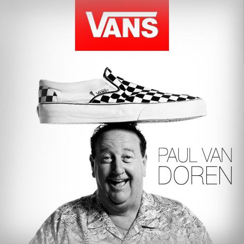

|
| 
Paul Van Doren was born in 1930 and grew up in the Boston Area. When he reached the eigth grade, he realized he didn’t like school and promptly left. He had a passion for horses and at the age of 14 and a half made his way to the race track. He was known as ‘Dutch the Clutch’ and for a buck he would give you odds on the race. Paul’s mother couldn’t stand he wasn’t working or going to school. She dragged him into the shoe factory where she worked and got him a job making shoes and sweeping the factory floor. This was to define the young Van Doren’s future. In twenty years, Paul worked his way up the ranks and became the Executive Vice President of Randy’s, a Boston based shoe manufacturer. Randy’s was well known at the time and made canvas shoes for Bob Cousy, the flashy Boston Celtics legend who was later voted one of the top 50 NBA players of all time.
During the early sixties, Randy’s had become the third largest manufacturer of shoes in the US. But they had a factory in Gardenvale California that was losing a million dollars a month. Paul Van Doren, his brother Jim Van Doren and long time friend Gordon Lee were given the task of straightening out the factory, and after 8 months they turned the west coast factory around and it was doing better than the one back in Boston.
Three months later Paul Van Doren sat his five kids down and announced he was quitting his job to start a new shoe company. “Don’t worry we’re going to be fine” he said to his children, who weren’t at all concerned. Their dad was fanatical about cleaning and they were hoping this meant they only had to wash his car every second day instead of every day as it was currently.
|